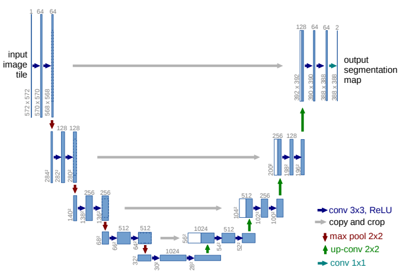
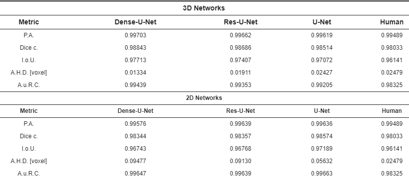

U-net is een Fully Convolutional Network (FCN) dat gebruikt kan worden voor semantische segmentatie. Dit netwerk bevat geen fully connected lagen, maar enkel convolutionele. In het algemeen heeft een FCN veel trainingsdata nodig. Daarom is het niet ideaal voor medische beeldanalyse, waar men slechts een beperkt aantal gesegmenteerde beelden heeft. U-net bracht hier verandering in. Dit Fully Convolutional Netwerk (FCN) heeft slechts een beperkt aantal trainingsbeelden nodig om goede resultaten te bekomen. Daarom werd het zeer populair in de medische wereld. De geïnteresseerde lezer verwijzen we door naar de originele paper van Olaf Ronneberger, Philipp Fischer en Thomas Brox (2015) [1].
Het netwerk dat ik gemaakt heb is gebaseerd op een artikel van M. Kolarik et al. uit januari 2019 [2]. De code horende bij dit artikel is te vinden op GitHub. In hun artikel combineerden de auteurs twee uitbreidingen op het originele U-net in [1]. Ze bekeken of een eerder voorgesteld 3D U-net verbeterd kon worden door extra verbindingen tussen de lagen. Er werden twee netwerken voorgesteld, Res 3D U-net en Dense 3D U-net. Deze netwerken werden dan vergeleken met het originele 3D U-net. Er werd ook telkens een 2D versie geïmplementeerd om ook hiermee te vergelijken. De netwerken werden toegepast voor de extractie van het hersenvolume op 3D hersenscans. Het doel is hier om voor elke voxel te bepalen of deze al dan niet behoort tot het hersenvolume. De data bestaat uit 21 3D hersenscans waarop getraind werd en 1 3D hersenscan waarop getest werd. De hersenscans bevatten 257x400x400 voxels. Omwille van beperkt RAM geheugen werden de 3D netwerken niet getraind op de volledige 3D hersenscan, maar op een volume van 16 opeenvolgende 2D slices. In elk epoch werd zo het hele hersenvolume doorlopen. De resultaten voor de verschillende netwerken staan in de onderstaande figuur.
De resultaten van het netwerk werden ook vergeleken met die van een manuele segmentatie door een radioloog. Als ground truth voor dit experiment gebruikte men een segmentatie die met uitzonderlijke zorg en extra aandacht door een radioloog werd gemaakt. De data werd vervolgens gesegmenteerd door een andere radioloog die segmenteerde zoals in de dagelijkse praktijk gebeurt. Deze twee segmentaties werden dan vergeleken om tot een Dice score te komen.
Onder deze netwerken haalt het Dense 3D U-net de beste resultaten. Bovendien behalen alle de netwerken een betere Dice score dan de manuele segmentatie zoals die in de dagelijkse praktijk gebeurt.
In mijn onderzoek heb ik gewerkt met het klassieke 2D U-net zoals het geïmplementeerd werd in bovengenoemd artikel. Het 3D U-net kon ik niet implementeren omwille van het beperkte RAM geheugen op mijn laptop. Deze heeft een RAM-geheugen van 8 GB, waarvan ongeveer 4-5 GB beschikbaar voor Python. Uit de resultaten voor alle netwerken blijkt echter dat ook het U-net in 2D zeer goede resultaten bereikt. Het klassieke 2D U-net bereikt namelijk een Dice score van 0.98574 op de dataset in het artikel.
De beschikbare data in ons experiment zijn 74 T1-gewogen 3D hersenscans die gesegmenteerd zijn met SPM12. Hiervan kunnen 60 scans gebruikt worden voor training en 14 scans zijn beschikbaar om het netwerk te testen. De hersenvolumes worden aan het netwerk gegeven als 2D sagittale sneden. Bij het trainen wordt in elke stap een reeks van 16 sneden gebruikt. Deze sneden worden willekeurig gekozen over alle hersenscans waarop het netwerk traint. Een mogelijke verbetering van het netwerk zou kunnen zijn om steeds opeenvolgende slices in eenzelfde hersenscan te kiezen. Zo zou het netwerk ook contextuele info in 3 dimensies kunnen leren. Dit idee heb ik niet experimenteel getest.
In dit project heb ik enkel gewerkt rond de U-net architectuur. Er bestaan echter nog verschillende andere netwerken die gebruikt kunnen worden voor segmentatie van hersenbeelden. Hieronder enkele voorbeelden.
[1] Ronneberger O., Fischer P., Brox T. (2015). U-Net: Convolutional Networks for Biomedical Image Segmentation, arXiv:1505.04597.
[2] Kolařík, M., Burget, R., Uher, V., Říha, K., & Dutta, M. K. (2019). Optimized High Resolution 3D Dense-U-Net Network for Brain and Spine Segmentation. Applied Sciences, 9(3), vol. 9, no. 3 (link).